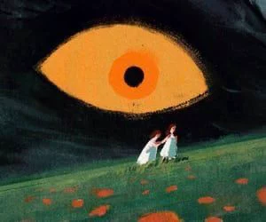
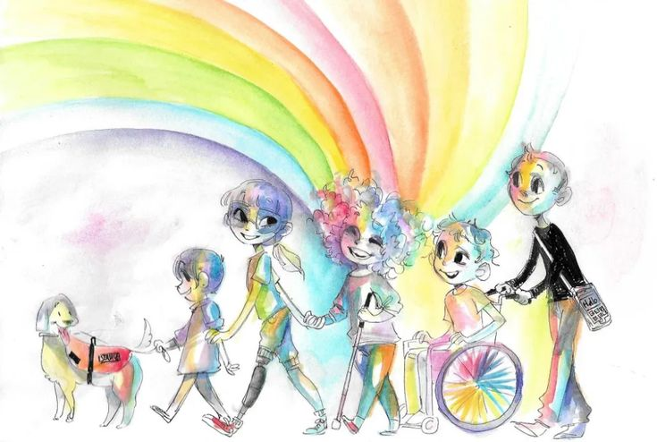

Depression
Major Depressive Disorder (MDD)
What is Depression?
Depression (Major Depressive Disorder) is a common and serious medical illness that negatively affects how you feel, the way you think, and how you act. It causes persistent feelings of sadness and loss of interest in activities once enjoyed, and can lead to a variety of emotional and physical problems that decrease a person's ability to function at work and at home.
Symptoms must last at least two weeks and include persistent sad or "empty" mood, loss of pleasure, changes in appetite, sleep disturbances, fatigue, feelings of worthlessness, difficulty thinking, and in severe cases, thoughts of death or suicide.
people affected worldwide
of global population
cases go untreated
Research Studies
The Effectiveness of Antidepressants vs. Psychotherapy
This large-scale meta-analysis of over 500 randomised controlled trials found that both antidepressants and CBT are effective for major depression. Crucially, the combination of both treatments produced significantly better outcomes than either alone, with remission rates improving by up to 30%. The study underscores that depression is not a "one-size-fits-all" condition and personalised treatment plans yield the best results.
Exercise as a Treatment for Depression
A landmark study compared aerobic exercise, antidepressant medication, and a combination in older adults with MDD. After 16 weeks all three groups showed similar reductions in depression. However, at 10-month follow-up, exercise group participants had significantly lower relapse rates (8%) compared to the medication group (38%), suggesting exercise produces more durable antidepressant effects by promoting neuroplasticity and increasing BDNF.
Depression and Neuroinflammation
This pivotal paper established a robust link between chronic inflammation and depression. Elevated inflammatory markers (IL-6, TNF-α, CRP) are consistently higher in people with depression. The study proposed that the brain's immune response may alter neurotransmitter metabolism, reduce neuroplasticity, and cause behavioural symptoms of depression — opening the door to anti-inflammatory treatments as a new therapeutic frontier.
Clinical Anxiety
Generalised Anxiety Disorder (GAD) & Related Conditions
What is Clinical Anxiety?
Anxiety disorders are the most common mental health conditions globally. Unlike everyday worry, clinical anxiety is persistent, excessive, and interferes significantly with daily life. Generalised Anxiety Disorder involves chronic, uncontrollable worry about many areas of life. Other anxiety disorders include Panic Disorder, Social Anxiety Disorder, and Specific Phobias.
Physical symptoms include rapid heartbeat, shortness of breath, muscle tension, sweating, and fatigue. Psychological symptoms include excessive worry, difficulty concentrating, irritability, and sleep disturbance. Symptoms must be present for at least 6 months for a GAD diagnosis.
people affected worldwide
of global population
more common in women
Research Studies
CBT for Generalised Anxiety Disorder
This comprehensive meta-analysis confirmed that Cognitive Behavioural Therapy is the gold-standard psychological treatment for GAD, with effect sizes ranging from moderate to large. The review found that CBT produces durable improvements at 12-month follow-up and is equally effective in group or individual formats, making it a highly scalable treatment option for healthcare systems worldwide.
The Amygdala's Role in Anxiety
This influential neuroscience paper demonstrated via neuroimaging that the amygdala, the brain's threat-detection hub, becomes hyperreactive in anxiety disorders, triggering defensive responses even in the absence of real danger. This research reshaped treatment approaches, explaining why both top-down (CBT, mindfulness) and bottom-up (medication) approaches are necessary for complete symptom relief.
Mindfulness-Based Stress Reduction vs. Medication for Anxiety
This RCT directly compared MBSR with escitalopram (a leading anti-anxiety medication) in adults with anxiety disorders. Both treatments produced equivalent reductions in anxiety symptoms over 8 weeks, with MBSR showing a 30% reduction in anxiety scores — comparable to the medication group. This is the first high-quality evidence that mindfulness is as effective as first-line pharmacotherapy for anxiety disorders.
Bipolar Disorder
Bipolar I, Bipolar II & Cyclothymic Disorder
What is Bipolar Disorder?
Bipolar disorder is characterised by extreme mood episodes — from emotional highs (mania or hypomania) to lows (depression). During manic episodes a person may feel euphoric, full of energy, or unusually irritable. During depressive episodes they may feel sad, hopeless, and lose interest in most activities.
Bipolar I involves full manic episodes lasting at least 7 days. Bipolar II involves hypomanic episodes (less severe) and depressive episodes. Mood episodes can affect sleep, energy, judgment, and behaviour, and significantly disrupt relationships and work.
people affected worldwide
of global population
average delay to diagnosis

Research Studies
Lithium's Neuroprotective Effects in Bipolar Disorder
This neuroimaging study found that patients treated with lithium showed significantly greater grey matter volume in prefrontal cortex regions compared to unmedicated patients. Lithium — the cornerstone mood stabiliser for over 50 years — appears not just to reduce mood episodes but to actively protect and regenerate brain tissue in areas responsible for emotional regulation, impulse control, and decision-making.
Sleep Disruption as a Trigger for Bipolar Episodes
This review established sleep disturbance as both a symptom and a causal trigger of bipolar mood episodes. Even one night of sleep loss can precipitate a manic episode in vulnerable individuals. Social Rhythm Therapy (SRT), which stabilises daily routines and sleep patterns, was shown to significantly reduce relapse rates when combined with medication.
Genetic Architecture of Bipolar Disorder
This landmark genome-wide association study of over 41,000 bipolar cases identified 64 genomic loci associated with bipolar disorder, many overlapping with genes implicated in schizophrenia and depression. The findings confirmed bipolar disorder's strong heritability (~60–80%) and revealed shared genetic risk with other psychiatric conditions, pointing toward new biological targets for future drug development.
PTSD
Post-Traumatic Stress Disorder
What is PTSD?
Post-Traumatic Stress Disorder (PTSD) is a psychiatric disorder that may occur in people who have experienced or witnessed a traumatic event such as a natural disaster, serious accident, war/combat, or violent personal assault. It has been known by many names in the past, such as "shell shock" and "combat fatigue."
PTSD is characterised by four symptom clusters: intrusion (flashbacks, nightmares), avoidance (of trauma-related triggers), negative alterations in cognition and mood (guilt, emotional numbing), and hyperarousal (hypervigilance, sleep disturbance, irritability). Symptoms must last more than one month and significantly impair functioning.
lifetime prevalence globally
adults experience trauma
develop PTSD after trauma
Research Studies
EMDR vs. CBT for PTSD Treatment
This Cochrane review analysed 70 randomised controlled trials comparing trauma-focused therapies for PTSD. Both EMDR and trauma-focused CBT were found to be highly effective, producing large reductions in PTSD symptom severity. EMDR achieved comparable results to CBT in fewer sessions for many patients, and both were confirmed as first-line treatments.
The Neurobiology of Traumatic Memory
This foundational review explained why traumatic memories are so persistent. Trauma activates the amygdala and floods the brain with stress hormones, which "over-consolidate" the memory. The hippocampus, which normally contextualises memories in time and place, becomes dysregulated, causing flashbacks to feel like they are happening in the present — validating exposure-based therapies that safely reactivate traumatic memories to allow re-encoding.
MDMA-Assisted Therapy for Treatment-Resistant PTSD
This Phase 3 clinical trial found that after three MDMA-assisted therapy sessions, 67% of participants no longer met PTSD diagnostic criteria — compared to 32% in the placebo group. This is among the most dramatic treatment outcomes ever recorded for PTSD and has accelerated MDMA toward regulatory approval as a breakthrough therapy, appearing to reduce amygdala reactivity so patients can process traumatic memories without being overwhelmed.
Autism
Autism Spectrum Disorder (ASD)
What is Autism Spectrum Disorder?
Autism Spectrum Disorder (ASD) is a complex neurodevelopmental condition characterised by differences in social communication and interaction, and the presence of restricted, repetitive patterns of behaviour, interests, or activities. "Spectrum" reflects the wide variation in challenges and strengths of each person with ASD.
Core features include difficulty with social-emotional reciprocity, nonverbal communication challenges, insistence on sameness, highly restricted interests, and hyper- or hyposensitivity to sensory input. Importantly, autism is not an illness — it is a different way of experiencing and interacting with the world.
children globally
more diagnosed in boys
heritability estimated

Research Studies
Early Intervention and Brain Plasticity in Autism
This landmark RCT evaluated the Early Start Denver Model (ESDM) in toddlers with ASD aged 18–30 months. Children receiving ESDM for 2 years showed significantly greater improvements in IQ, language ability, and adaptive behaviour. EEG scans showed ESDM children developed more normalised brain activity patterns in response to social stimuli, demonstrating that early intervention can meaningfully shape neural development during critical windows of brain plasticity.
The "Female Autism Phenotype" and Diagnosis Disparities
This study explored "camouflaging" — masking autistic traits to fit social environments — and found it is significantly more prevalent in autistic women and girls. The research explained why autism is consistently underdiagnosed in females (diagnosed on average 4 years later than males), and highlighted the mental health toll of masking, which is strongly associated with anxiety, depression, and autistic burnout.
Gut Microbiome and Autism Spectrum Disorder
This groundbreaking trial treated 18 autistic children with Microbiota Transfer Therapy over 10 weeks. Not only did gut symptoms improve dramatically, but autism-related behaviours improved by 45% on standardised scales. At 2-year follow-up, improvements were maintained and even strengthened, providing compelling evidence for the gut-brain axis in autism and how gut bacteria influence neurodevelopment and behaviour.